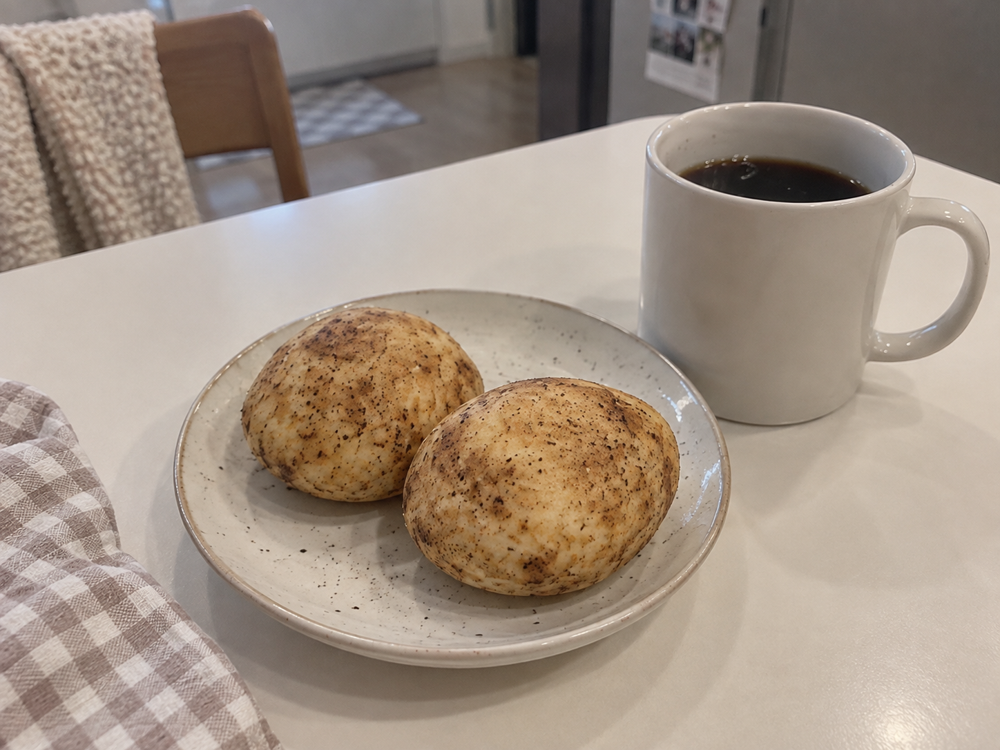
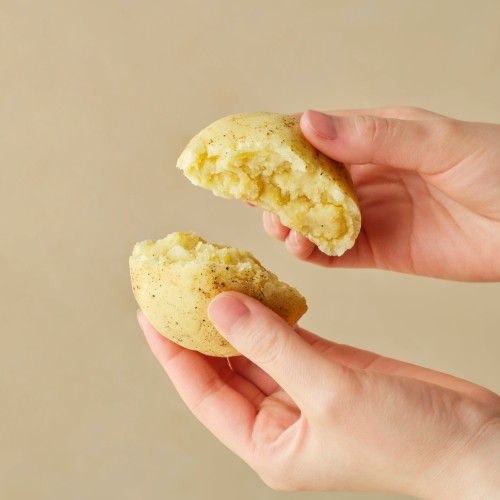
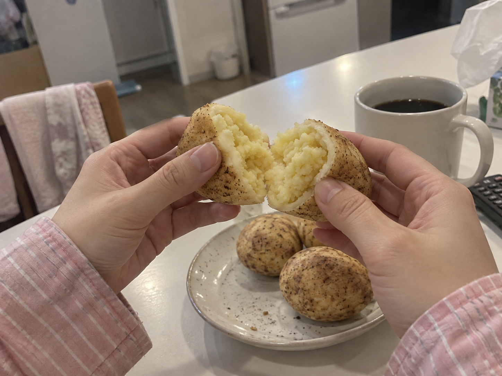
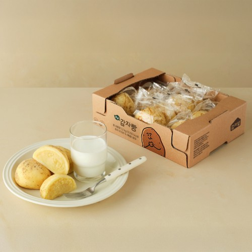
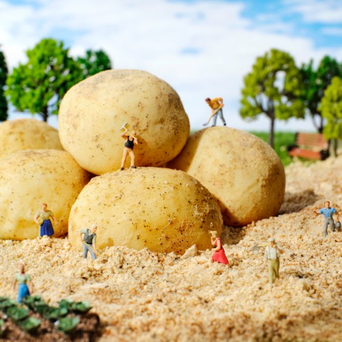

이 포스팅은 네이버 쇼핑 커넥트 활동의 일환으로, 판매 발생 시 수수료를 제공받습니다.
춘천 감자밭 감자빵 택배 10개입, 춘천까지 가지 않고 즐길 간식

감자처럼 생긴 빵을 보면 한 번 갈라보고 싶어져요. 춘천 감자밭이 궁금한데 당장 여행 일정이 없다면 택배로 만날 수 있다는 점이 반갑죠.
춘천 감자밭 원조 감자빵은 10개입 냉동 택배 상품이에요. 집에서 나눠 먹을 지역 간식을 찾는 분에게 선택 이유가 분명해요.
1. 감자 모양의 재미

표면은 감자처럼 생겼고 판매 사진에서는 속을 갈라놓은 모습도 볼 수 있어요. 모양과 속을 함께 보면 일반적인 빵과 다르게 눈길이 가는 이유가 보여요.

춘천 감자밭의 원조 제품을 찾았다면 판매처 이름과 상품 구성을 맞춰보세요. 비슷한 이름의 감자빵 중 어떤 제품을 주문하는지 고르는 기준이 돼요.
(감자 모양이라 접시에 올려놓는 모습부터 귀여워요.)
💚 원조 감자빵 모양·10개입 구성 보기2. 10개입으로 나누기

확인해둔 표시 가격은 31,000원이에요. 10개입이라 상품가격 기준 한 개당 3,100원으로 계산할 수 있어요.
가족과 나눠 먹거나 집에서 간식 시간에 하나씩 준비할 양이에요. 냉동 택배 상품이라 받은 뒤 보관하고 데우는 방법은 상품 안내에 맞춰 보면 돼요.
3. 집에서 만드는 간식 시간

따뜻한 음료와 감자빵을 곁들이면 멀리 가지 않고도 지역 간식을 만나볼 수 있어요. 춘천까지 가지 않고 원조 감자빵을 받아볼 수 있다는 점이 이 택배 상품의 선택 이유예요.
먹을 만큼 준비해 속을 갈라보는 장면이 떠오른다면 아래 택배 구성을 살펴보세요. 가족과 나눌 간식인지, 냉동실에 두고 꺼낼 간식인지에 맞춰 주문하면 돼요.
(춘천 여행 전 간식부터 만나보는 것도 기대되네요.)
춘천 감자밭 감자빵이 궁금했다면, 아래 10개입 택배로 집에서 나눠 먹을 간식 시간을 준비해보세요.
💚 춘천 감자밭 냉동 택배·데우는 안내 보기가격은 2026년 10월 6일 확인한 상품 표시 가격으로, 옵션·배송비·구매 시점에 따라 달라질 수 있어요.